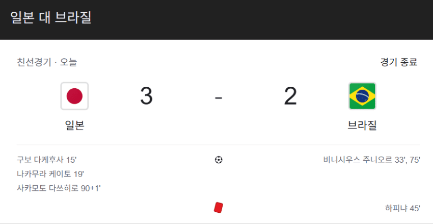
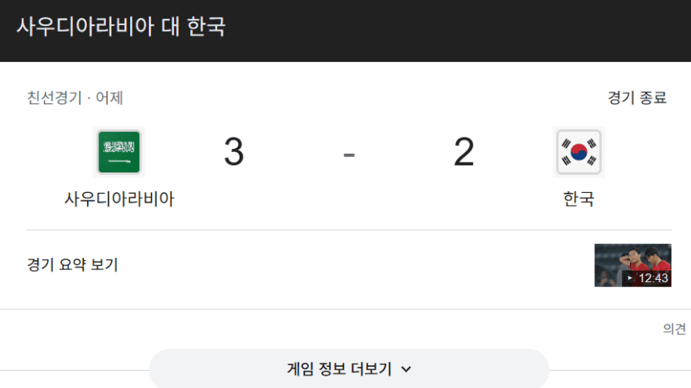
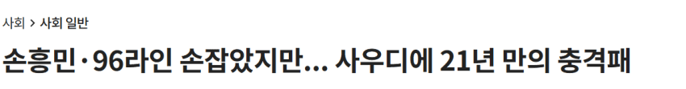
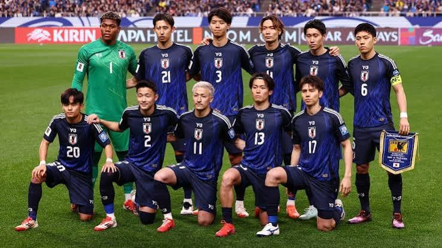
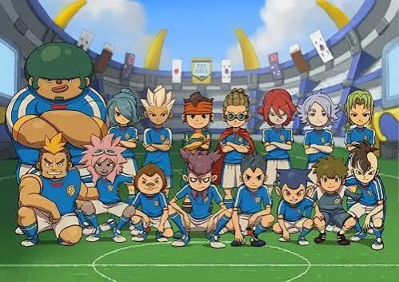
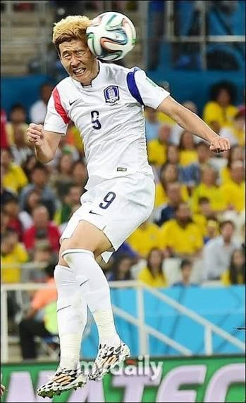
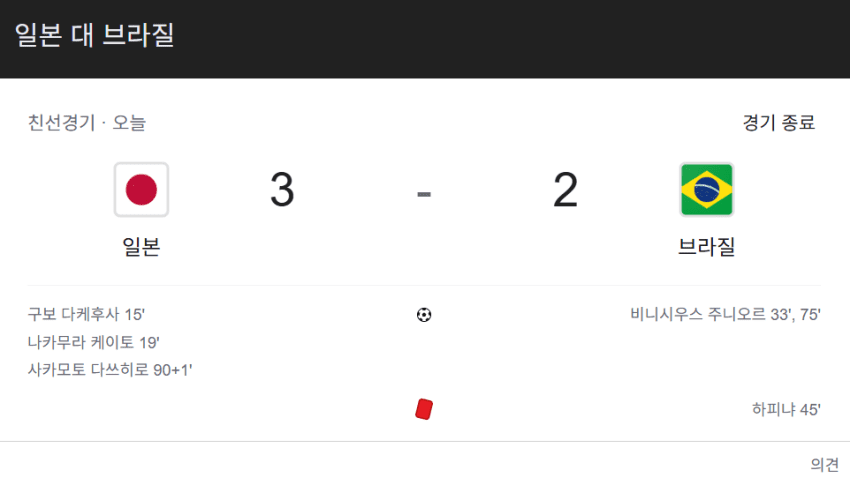
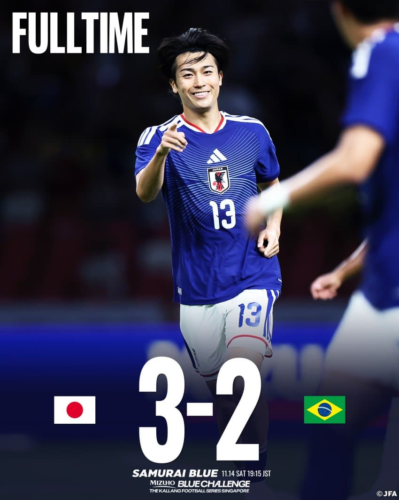

다시 3:2 역전

3:2 하니까 떠오르는 그 스코어.. ㄹㅇ

ㅋㅋㅋㅋㅋㅋㅋ

그리고
그 7번의 앰창 터치...


영원한 아시아 축구 넘버 원 ..
+
" 자 오늘의 7번을 쳐때릴 특별손님을 모시겠습니다! "

+
- 사무라이블루 또다시 브라질에게 대역전승 기록!!!!!!.gif


브라질 3대2로 격파함
저번 평가전때 이기고 월드컵 때 맞붙고 라이벌 구도 형성된듯
댓글
수집 당시 댓글 368개
· ㅇㅇ · 11.15 10:29:04
· ㅇㅇ · 11.15 10:29:37
· ㅇㅇ · 11.15 10:29:54
· ㅇㅇ · 11.15 10:30:39
· ㅇㅇ · 11.15 10:31:24
· ㅇㅇ · 11.15 10:31:26
· ㅇㅇ · 11.15 10:31:45
· ㅇㅇ · 11.15 10:32:33
· ㅇㅇ · 11.15 10:33:13
· ㅇㅇ · 11.15 10:34:51
· ㅇㅇ · 11.15 10:35:20
· 주민번호34 · 11.15 11:47:50
· 주민번호34 · 11.15 11:48:45
· ㅇㅇ · 11.15 12:16:54
· ㅇㅇ · 11.15 15:10:40
ㅇㅇ · 11.15 09:49:40
ㅇㅇ · 11.15 09:52:43
ㅇㅇ · 11.15 09:54:55
· 주민번호34 · 11.15 11:42:47
ㅇㅇ · 11.15 09:56:06
2456778 · 11.15 09:57:43
dd · 11.15 09:58:41
dd · 11.15 09:58:52
ㅇㅇ · 11.15 10:12:23
· ㅇㅇ · 11.15 10:12:37
· 주민번호34 · 11.15 11:42:22
· ㅇㅇ · 11.15 11:49:00
· ㅇㅇ · 11.15 15:09:18
· ㅇㅇ · 11.15 15:53:55
ㅇㅇ · 11.15 10:14:09
· 페인 · 11.15 10:26:48
· ㅇㅇ · 11.15 11:05:23
· ㅇㅇ · 11.15 11:45:28
dd · 11.15 10:18:13
dd · 11.15 10:18:24
ㅇㅇ · 11.15 10:19:22
· 이>지 · 11.15 10:22:47
· ㅇㅇ · 11.15 10:25:38
· 이>지 · 11.15 10:29:35
· 이>지 · 11.15 10:30:19
· ㅇㅇ · 11.15 10:49:28
· 이>지 · 11.15 10:52:56
· ㅇㅇ · 11.15 10:55:02
· 이>지 · 11.15 11:00:18
· 이>지 · 11.15 11:01:25
· ㅇㅇ · 11.15 12:30:27
이>지 · 11.15 10:21:00
갓본
이>지 · 11.15 10:21:09
센징이
· 이>지 · 11.15 10:21:18
센징했다
00 · 11.15 10:27:00
ㅇㅇ · 11.15 10:34:02
ㅇㅇ · 11.15 10:35:01
· ㅇㅇ · 11.15 10:35:26
· ㅇㅇ · 11.15 10:35:34
ㅇㅇ · 11.15 10:35:32
ㅇㅇ · 11.15 10:43:57
ㅇㅅ · 11.15 10:51:44
문재인대통령 · 11.15 10:52:15
· 문재인대통령 · 11.15 10:52:26
· 문재인대통령 · 11.15 10:52:46
ㅇㅇ · 11.15 10:56:12
· 주민번호34 · 11.15 11:41:05
ㅇㅇ · 11.15 10:58:54
dd · 11.15 11:07:18
dd · 11.15 11:07:22
dd · 11.15 11:07:28
순수비난 · 11.15 11:13:22
ㅇㅇ · 11.15 11:13:53
ㅇㅇ · 11.15 11:22:35
· 주민번호34 · 11.15 11:40:38
· ㅇㅇ · 11.15 12:04:18
· ㅇㅇ · 11.15 14:36:22
아
NO벨과학상개센징 · 11.15 11:22:35
· NO벨과학상개센징 · 11.15 11:23:00
· NO벨과학상개센징 · 11.15 11:23:28
· NO벨과학상개센징 · 11.15 11:23:47
ㅇㅇ · 11.15 11:32:56
· 주민번호34 · 11.15 11:49:33
ㅇㅇ · 11.15 11:37:06
ㅇㅇ · 11.15 11:49:30
· 주민번호34 · 11.15 11:50:02
· ㅇㅇ · 11.15 12:17:31
공정성장 · 11.15 11:52:36
ㅇㅇ · 11.15 12:03:44
ㅇㅇ · 11.15 12:23:43
ㅇㅇ · 11.15 12:30:45
범인
은?
· ㅇㅇ · 11.15 12:30:51
M
Кошечка · 11.15 12:36:54
Gloved 1 · 11.15 12:44:17
ㅇㅇ · 11.15 12:50:14
ㅇㅇ · 11.15 12:53:55
멕라렌 · 11.15 13:02:25
ㅇㅇ · 11.15 13:36:57
· ㅇㅇ · 11.15 14:11:45
ㅇㅇ · 11.15 14:10:05
ㅇㅇ · 11.15 14:15:49
ㄹㄴㅇㄹ · 11.15 14:57:28
ㅇㅇ · 11.15 15:31:05
ㅇㅇ · 11.15 15:37:19
ㅇㅇ · 11.15 15:38:23
· ㅇㅇ · 11.15 09:18:01
ㅇㅇ · 11.15 09:18:15
ㅇㅇ · 11.15 09:18:16
· ㅇㅇ · 11.15 09:18:25
· ㅇㅇ · 11.15 09:18:47
· ㅇㅇ · 11.15 09:19:11
한심스럽다 병신민국
· ㅇㅇ · 11.15 09:20:14
ㅇㅇ · 11.15 09:18:29
삭제됨 · 11.15 09:20:12
· ㅇㅇ · 11.15 09:21:30
· ㅇㅇ · 11.15 09:25:12
ㅇㅇ · 11.15 09:20:49
ㅇㅇ · 11.15 09:23:00
ㅇㅇ · 11.15 09:23:41
· ㅇㅇ · 11.15 09:24:30
· ㅇㅇ · 11.15 09:26:24
ㅇㅇ · 11.15 09:23:53
· ㅇㅇ · 11.15 09:24:35
ㄹㅇㅋㅋ
ㅇㅇ · 11.15 09:25:01
· dd · 11.15 09:42:16
· ㅇㅇ · 11.15 09:49:16
· dd · 11.15 10:27:28
· 주민번호34 · 11.15 11:45:48
· 주민번호34 · 11.15 11:46:23
· ㅇㅇ · 11.15 11:50:04
ㅈ · 11.15 09:25:24
dd · 11.15 09:26:09
dd · 11.15 09:26:16
dd · 11.15 09:26:22
dd · 11.15 09:26:45
갓본>>조센징ㄹㅇㅋㅋ
통붕이 · 11.15 09:28:29
ㅇㅇ · 11.15 09:29:13
ㅇㅇ · 11.15 09:30:47
· ㅇㅇ · 11.15 09:31:06
· ㅇㅇ · 11.15 09:31:53
· ㅇㅇ · 11.15 09:32:04
ㅇㅇ · 11.15 09:32:36
uSeon · 11.15 09:33:38
ㅇㅇ · 11.15 09:36:45
ㅇㅇ · 11.15 09:37:00
ㅇㅇ · 11.15 09:39:02
ㅇㅇ · 11.15 09:39:28
ㅇㅇ · 11.15 09:39:43
ㅇㅇ · 11.15 09:40:59
ㅇㅇ · 11.15 09:42:01
ㅇㅇ · 11.15 09:43:01
· ㅇㅇ · 11.15 09:46:32
ㅇㅇ · 11.15 09:46:28
· ㅇㅇ · 11.15 09:48:37
· ㅇㅇ · 11.15 09:49:32
· ㅇㅇ · 11.15 09:49:52
· ㅇㅇ · 11.15 09:50:51
· ㅇㅇ · 11.15 09:51:24
· ㅇㅇ · 11.15 09:52:23
· ㅇㅇ · 11.15 09:52:34
· ㅇㅇ · 11.15 09:54:00
· ㅇㅇ · 11.15 09:56:00
· ㅇㅇ · 11.15 09:57:21
· ㅇㅇ · 11.15 09:58:09
· ㅇㅇ · 11.15 09:59:00
· ㅇㅇ · 11.15 10:00:07
· ㅇㅇ · 11.15 10:00:42
· ㅇㅇ · 11.15 10:00:50
· ㅇㅇ · 11.15 10:01:50
· ㅇㅇ · 11.15 10:01:54
· ㅇㅇ · 11.15 10:02:31
· ㅇㅇ · 11.15 10:03:40
· ㅇㅇ · 11.15 10:04:07
· ㅇㅇ · 11.15 10:04:21
· ㅇㅇ · 11.15 10:06:49
· ㅇㅇ · 11.15 10:07:58
· ㅇㅇ · 11.15 10:08:47
· ㅇㅇ · 11.15 10:08:47
· ㅇㅇ · 11.15 10:08:54
· ㅇㅇ · 11.15 10:09:25
· ㅇㅇ · 11.15 10:09:30
· ㅇㅇ · 11.15 10:09:58
· ㅇㅇ · 11.15 10:10:40
· ㅇㅇ · 11.15 10:12:09
· ㅇㅇ · 11.15 10:13:01
· ㅇㅇ · 11.15 10:13:13
· ㅇㅇ · 11.15 10:13:53
· ㅇㅇ · 11.15 10:15:42
· ㅇㅇ · 11.15 10:16:13
· ㅇㅇ · 11.15 10:16:58
· ㅇㅇ · 11.15 10:17:55
· ㅇㅇ · 11.15 10:17:57
· ㅇㅇ · 11.15 10:18:48
· ㅇㅇ · 11.15 10:19:03
· ㅇㅇ · 11.15 10:20:11
· ㅇㅇ · 11.15 10:20:12
· ㅇㅇ · 11.15 10:20:56
· ㅇㅇ · 11.15 10:22:00
· ㅇㅇ · 11.15 10:23:03
· ㅇㅇ · 11.15 10:24:55
· ㅇㅇ · 11.15 10:25:53
· ㅇㅇ · 11.15 10:26:18
· ㅇㅇ · 11.15 10:27:47
· ㅇㅇ · 11.15 10:28:05
· ㅇㅇ · 11.15 10:28:55
· ㅇㅇ · 11.15 09:14:52
· ㅇㅇ · 11.15 09:15:35
· ㅇㅇ · 11.15 09:16:04
· ㅇㅇ · 11.15 09:16:44
· ㅇㅇ · 11.15 09:16:59
· ㅇㅇ · 11.15 09:17:21
· ㅇㅇ · 11.15 09:17:41
· ㅇㅇ · 11.15 09:17:47
· ㅁㄴㅇㄹ · 11.15 09:19:52
· ㅇㅇ · 11.15 09:21:02
· ㅇㅇ · 11.15 09:24:32
· ㅇㅇ · 11.15 10:33:10
· ㅇㅇ · 11.15 10:34:36
ㅇㅇ · 11.15 08:42:14
ㅇㅇ · 11.15 08:42:38
토라만 · 11.15 08:42:39
· ㅇㅇ · 11.15 10:11:49
ㅇㅇ · 11.15 08:42:54
ㅇㅇ · 11.15 08:43:18
ㅇㅇ · 11.15 08:43:32
ㅇㅇ · 11.15 08:44:24
ㅇㅇ · 11.15 08:44:34
· ㅇㅇ · 11.15 08:45:48
ㅇㅇ · 11.15 08:46:40
· 토라만 · 11.15 08:47:13
· ㅇㅇ · 11.15 10:11:29
dd · 11.15 08:50:06
ㅇㅇ · 11.15 08:50:28
ㅇㅇ · 11.15 08:51:17
· ㅇㅇ · 11.15 09:04:07
· ㅇㅇ · 11.15 09:04:59
· ㅇㅇ · 11.15 09:08:02
· ㅇㅇ · 11.15 09:09:07
· ㅇㅇ · 11.15 09:10:06
· ㅇㅇ · 11.15 09:10:54
· ㅇㅇ · 11.15 09:12:36
· ㅇㅇ · 11.15 09:14:00
· ㅇㅇ · 11.15 09:33:14
· ㅇㅇ · 11.15 09:41:34
ㅇㅇ · 11.15 08:52:00
dd · 11.15 08:52:46
붉은꼬리보아뱀Ψ · 11.15 08:54:15
ㅇㅇ · 11.15 08:54:16
ㅇㅇ · 11.15 08:56:11
ㅇㅇ · 11.15 08:56:14
· ㅇㅇ · 11.15 09:07:02
· ㅇㅇ · 11.15 09:11:38
ㅇㅇ · 11.15 08:57:11
ㅇㅇ · 11.15 08:57:49
· ㅇㅇ · 11.15 09:03:17
· ㅇㅇ · 11.15 09:04:37
ㅇㅇ · 11.15 08:58:01
· ㅇㅇ · 11.15 09:07:36
ㅇㅇ · 11.15 08:58:16
ㅇㅇ · 11.15 08:58:46
· ㅇㅇ · 11.15 10:13:06
ㅇㅇ · 11.15 09:01:01
조선인의 목을 치듯
1111 · 11.15 09:02:06
· ㅇㅇ · 11.15 10:13:42
ㅇㅇ · 11.15 09:02:15
· ㅇㅇ · 11.15 09:05:32
ㅇㅇ · 11.15 09:02:30
ㅇㅇ · 11.15 09:03:34
· ㅇㅇ · 11.15 09:06:14
ㅇㅇ · 11.15 09:04:33
냠븜 · 11.15 09:04:42
· 대라드⛰ · 11.15 09:05:56
ㅇㅇ · 11.15 09:04:51
· ㅇㅇ · 11.15 09:06:50
· 주민번호34 · 11.15 11:44:08
ㅇㅇ · 11.15 09:05:36
ㅇㅇ · 11.15 09:08:54
ㅇㅇ · 11.15 09:09:35
ㅇㅇ · 11.15 09:09:46
ㅇㅇ · 11.15 09:09:54
ㅇㅇ · 11.15 09:10:05
ㅇㅇ · 11.15 09:10:27
짱개들
댓글특징
· ㅇㅇ · 11.15 09:10:30
· ㅇㅇ · 11.15 09:11:29
· ㅇㅇ · 11.15 09:12:20
· ㅇㅇ · 11.15 09:13:05
조센징
· ㅇㅇ · 11.15 09:14:11
· ㅇㅇ · 11.15 09:18:02
· ㅇㅇ · 11.15 09:19:52
· ㅇㅇ · 11.15 09:24:16
· ㅇㅇ · 11.15 09:26:00
· 주민번호34 · 11.15 11:44:43
FT-FWMC · 11.15 09:10:48
· ㅇㅇ · 11.15 09:13:22
ㅇㅇ · 11.15 09:10:53
ㅇㅇ · 11.15 09:12:37
ㅇㅇ · 11.15 09:14:15
ㅇㅇ · 11.15 09:15:15
· ㅇㅇ · 11.15 09:16:35
· ㅇㅇ · 11.15 09:17:02
· ㅇㅇ · 11.15 09:24:49
· ㅇㅇ · 11.15 09:36:08
· ㅇㅇ · 11.15 09:36:50
ㅇㅇ · 11.15 09:17:00
ㅇㅇ · 11.15 09:17:12
ㅇㅇ · 11.14 21:36:53
ㅇㅇ · 11.14 21:38:06
· ㅇㅇ · 11.15 09:08:25
해갤러1 · 11.14 21:39:35
해갤러1 · 11.14 21:39:39
해갤러2 · 11.14 21:47:57
소짱깨
· 해갤러2 · 11.14 21:48:02
개센징
· ㅇㅇ · 11.15 09:05:14
이상
짱개의
실베똥글
· ㅇㅇ · 11.15 09:05:50
짱개들
마음만은
일본인이래
ㅇㅇ · 11.14 21:49:22
· ㅇㅇ · 11.14 21:52:06
· 해갤러6 · 11.14 22:13:21
· 아무갤러 · 11.15 02:54:11
· ㅇㅇ · 11.15 08:45:28
· ㅇㅇ · 11.15 08:46:31
· ㅇㅇ · 11.15 08:59:22
이>지 · 11.14 21:50:05
ㅇㅇ · 11.14 21:51:28
ㅇㅇ · 11.14 21:52:34
· ㅇㅇ · 11.14 22:04:07
· ㅇㅇ · 11.15 08:48:24
ㅇㅇ · 11.14 21:53:02
쉔 · 11.14 21:53:19
해갤러3 · 11.14 21:55:06
· 아무갤러 · 11.15 02:55:04
· ㅇㅇ · 11.15 08:50:16
· ㅇㅇ · 11.15 09:00:27
· ㅇㅇ · 11.15 09:09:19
해갤러4 · 11.14 21:56:17
해갤러5 · 11.14 22:08:23
ㅇㅇ · 11.14 22:11:44
ㅇㅇ · 11.14 22:14:39
· 이>지 · 11.14 22:18:06
이>지 · 11.14 22:18:20
해갤러13 · 11.14 22:29:09
· ㅇㅇ · 11.15 09:05:06
20261024 · 11.14 22:39:53
· 해갤러14 · 11.14 22:53:34
· ㅇㅇ · 11.15 09:12:17
해갤러15 · 11.14 23:06:57
· dd · 11.15 03:25:19
· ㅇㅇ · 11.15 09:01:14
ㅇㅇ · 11.14 23:14:40
ㅇㅇ · 11.14 23:21:34
ㄷㄷㄷㄹ · 11.14 23:45:32
ㅇㅇ · 11.15 00:42:18
해갤러17 · 11.15 01:37:59
· 해갤러1 · 11.15 03:26:25
· ㅇㅇ · 11.15 09:01:50
ㅇㅇ · 11.15 03:21:04
해갤러18 · 11.15 06:52:16
ㅇㅇ · 11.15 08:41:05
· ㅇㅇ · 11.15 08:46:41
· ㅇㅇ · 11.15 08:49:42
· ㅇㅇ · 11.15 08:51:12
· ㅇㅇ · 11.15 08:51:42
· ㅇㅇ · 11.15 08:59:18
· ㅇㅇ · 11.15 09:01:14
· ㅇㅇ · 11.15 09:01:50
· ㅇㅇ · 11.15 09:02:31
· ㅇㅇ · 11.15 09:02:40
· ㅇㅇ · 11.15 09:04:37
· ㅇㅇ · 11.15 09:09:21
· ㅇㅇ · 11.15 09:10:17
· ㅇㅇ · 11.15 09:11:04
· ㅇㅇ · 11.15 09:12:33
· ㅇㅇ · 11.15 09:12:49
· ㅇㅇ · 11.15 09:14:11